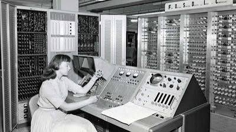

💾 Fra ENIAC til Apple II
Computerens univers

Da den store succes bag ENIAC blev så gennemgribende, indså man, hvilke fordele en computer kunne have for samfundet. Samtidig med den teknologiske udvikling blev man også opmærksom på de fejl og begrænsninger, som ENIAC havde, og som nu måtte forbedres.
Derfor blev UNIVAC I udviklet af J. Presper Eckert og John Mauchly – de samme mænd, som også stod bag ENIAC. De havde indset, hvilket stort potentiale der var i at sælge computere til virksomheder og organisationer. Gennem deres erfaringer med ENIAC blev det tydeligt, hvor stor en forskel teknologien kunne gøre, især ved at effektivisere arbejdet og gøre mange opgaver langt hurtigere.
UNIVAC I bestod af omkring 5.000 elektronrør, mens ENIAC havde omkring 17.000-18.000. Det var derfor en markant reduktion i størrelsen. UNIVAC vejede omkring 7,5 tons og udviklede, ligesom ENIAC, store mængder varme. Maskinen krævede derfor konstant overvågning og omfattende vedligeholdelse.
Formålet med at udvikle en ny udgave af ENIAC var blandt andet at forbedre lagringen av data. ENIAC anvendte hulkort, mens UNIVAC benyttede magnetbånd, som var langt mere praktiske at arbejde med. Magnetbånd kunne desuden lagre væsentligt større datamængder og gjorde håndteringen af information betydeligt lettere.
📟 UNIVAC I
UNIVAC var med til at skabe en ny generation af computere og ændrede samfundets syn på teknologi. Den blev for alvor verdenskendt under det amerikanske præsidentvalg i 1952. Mens meningsmålingerne forventede et meget tæt valg, forudsagde UNIVAC hurtigt en jordskredssejr til Dwight D. Eisenhower ud fra blot omkring én procent af de optalte stemmer. Folkene bag tv-udsendelsen havde svært ved at tro på computerens beregninger og valgte derfor i første omgang ikke at offentliggøre prognosen. Da alle stemmerne senere var talt op, viste det sig imidlertid, at computeren havde forudsagt resultatet med imponerende præcision.
Tv-udsendelsen gjorde UNIVAC til en enorm succes, fordi offentligheden for første gang oplevede, hvor hurtigt og præcist en computer kunne analysere enorme mængder data. Valget blev et afgørende øjeblik, hvor UNIVAC demonstrerede sit stort potentiale over for den brede befolkning.
Succesens omfang var så stort, at ordet "UNIVAC" i 1950'erne blev brugt som en generel betegnelse for computere, uanset hvilket firma der havde produceret dem.
I denne periode stod samfundet over for en teknologi, som de færreste forstod. Mange betragtede computeren som noget skræmmende, og medierne omtalte den ofte som en "elektronisk hjerne". At en stor maskine kunne udføre så avancerede beregninger virkede næsten som science fiction. Derfor opstod der også en frygt for, at teknologien en dag ville blive så avanceret, at den kunne overtage menneskets rolle.
Under præsidentvalget havde mange mennesker en klar forestilling om, hvordan resultatet burde blive. Da UNIVAC kom frem til et helt andet resultat, skabte det usikkerhed blandt eksperter og tv-værter. Computerens præcision udfordrede menneskets egen dømmekraft og viste, hvor revolutionerende den nye teknologi faktisk var.
UNIVAC var dog langt fra billig. Den kostede omkring én million amerikanske dollars i 1951, hvilket svarer til mere end 11 millioner dollars i nutidsværdi. Det illustrerer, hvor enorm en investering computeren var.
For en almindelig familie var det derfor helt urealistisk at eje en computer. De fleste havde hverken økonomien eller behovet for en sådan maskine. På dette tidspunkt var samfundet præget af fysisk arbejde, håndværk og industri. Mange familier sparede op til husholdningsapparater som køleskabe og vaskemaskiner. En computer blev derfor betragtet som en luksus, som kun de største virksomheder og offentlige institutioner havde råd til.
Da almindelige mennesker ikke havde adgang til computere, var deres viden om teknologien begrænset. Kun store virksomheder, universiteter og statslige institutioner kendte til computerens fulde muligheder. For de fleste var aviser, blade og radio de vigtigste informationskilder, hvilket gjorde udviklingen endnu mere mystisk.
🍎 Apple II
Apple II kostede ved lanceringen 1.298 amerikanske dollars, hvilket svarer til cirka 8.500 danske kroner efter datidens valutakurs. I dag kan man købe en computer fra omkring 2.000 kroner og opefter, afhængigt af behov og specifikationer.
Fra den banebrydende ENIAC over UNIVAC til den første computer, der for alvor fandt vej ind i almindelige hjem, kom Apple II i juni 1977. Apple II blev udviklet af virksomheden Apple, som stadig er en af verdens mest kendte teknologivirksomheder. I dag kender de fleste Apple gennem produkter som iPhone, iPad og Mac-computere.